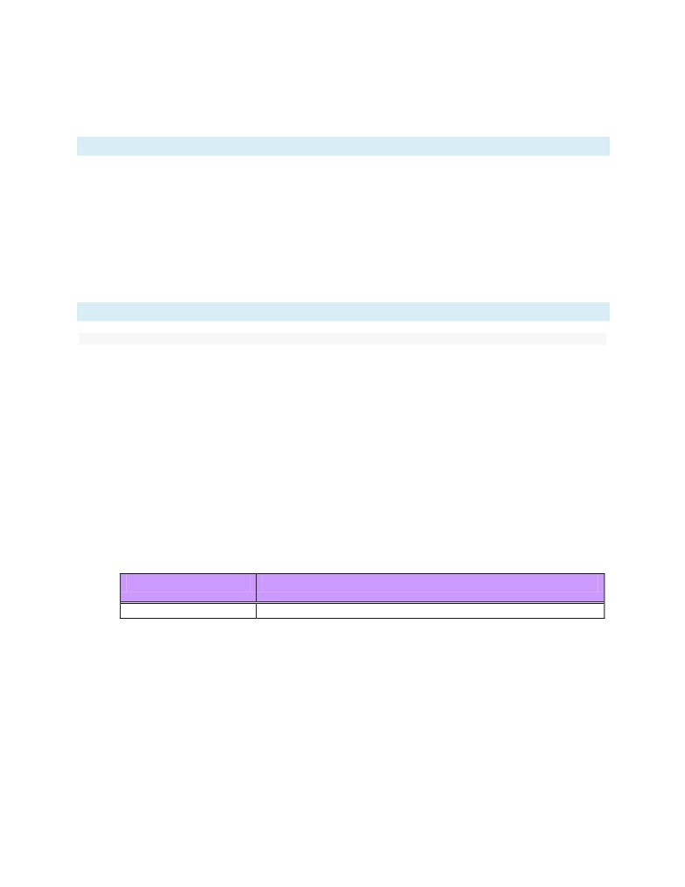
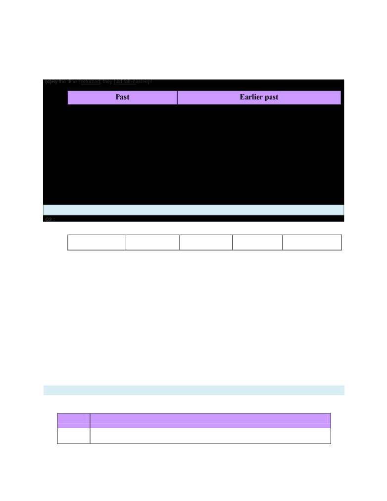
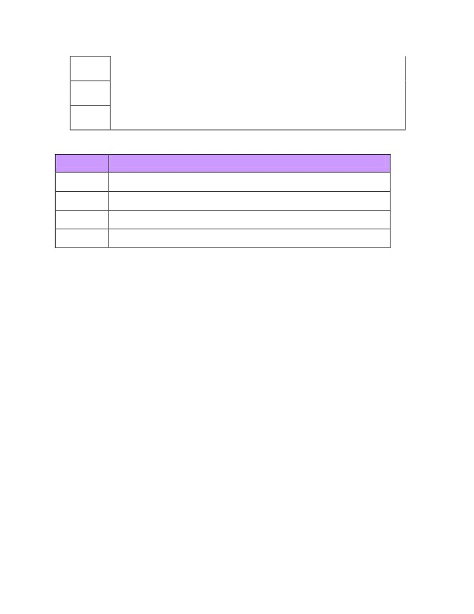
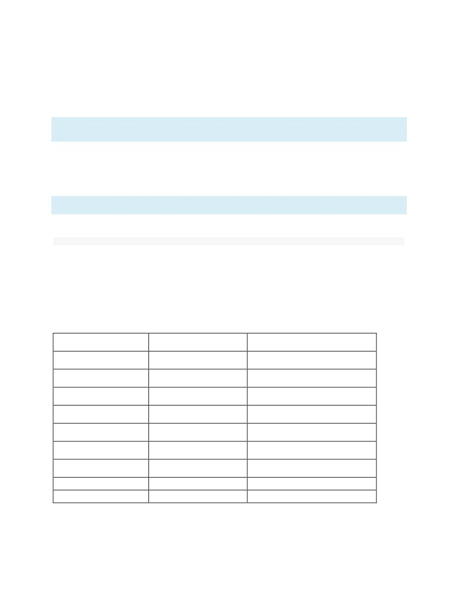
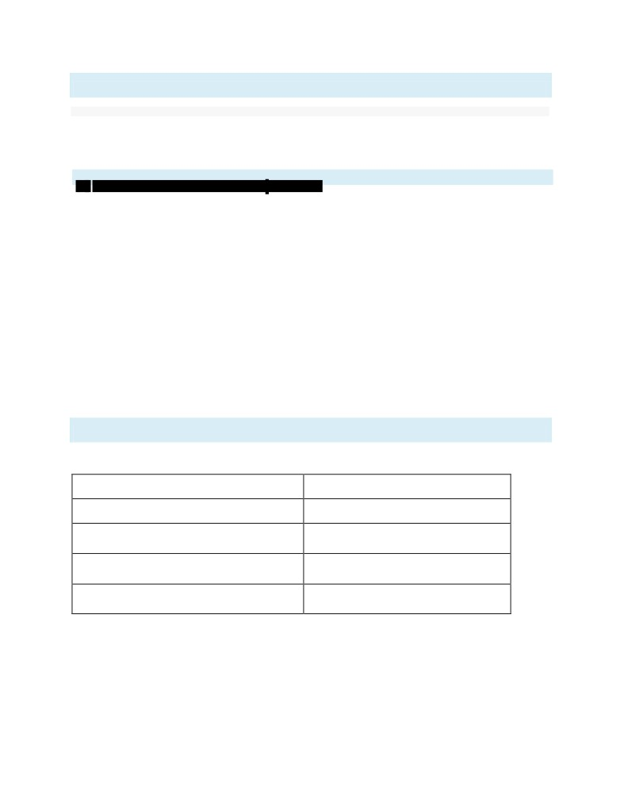
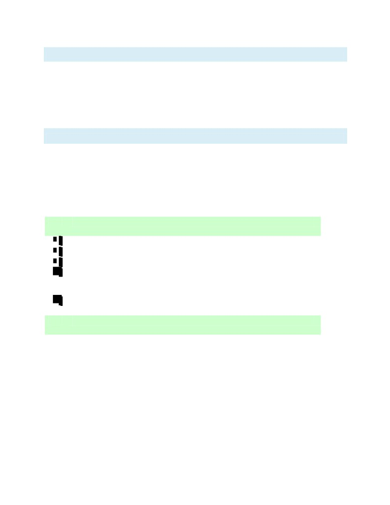

NCERT Solutions for Class 8 English Honeydew Chapter 1
The Best Christmas Present in the World Class 8
Chapter 1 The Best Christmas Present in the World Exercise Answers & Summary
Next Chapter 2 : The Tsunami >>
Comprehension check : Solutions of Questions on Page Number : 10
Q1 :
What did the author find in a junk shop?
Answer :
The author found a nineteenth century roll-top desk in the junk shop. It was made of oak. It was in a very bad condition. The roll-top
wasbroken into several pieces. One of the legs was clumsily mended and there were scorch marks down one side. The author
bought it in order to restore it.
Q2 :
What did he find in a secret drawer? Who do you think had put it in there?
Answer :
The author found a small black tin box in the secret drawer. There was a paper sello-taped to its top. It said, 'Jim's last letter,
received January 25, 1915. To be buried with me when the time comes.'
Most likely, it was put there by Mrs. Jim Macpherson, who was Jim's wife. Her name and address were on the envelope inside the
box.
Q3 :
Who had written the letter, to whom, and when?
Answer :
Jim Macpherson had written the letter to his wife Connie Macpherson on December 26, 1914.
Q4 :
Why was the letter written--what was the wonderful thing that had happened?
Answer :
Jim wrote the letter to tell his wife about a wonderful thing that had happened on Christmas day. The British and the Germans were
engaged in a war, yet on this day, both the troops met in no man's land. It was a thing of wonder because right in the middle of a
war, the warring soldiers were making peace.
Q5 :
What jobs did Hans Wolf and Jim Macpherson have when they were not soldiers?
Answer :
Hans Wolf was from Dusseldorf. He played the cello in the orchestra. Jim Macpherson was a school teacher from Dorset.
Q6 :
Had Hans Wolf even been to Dorset? Why did he say he knew it?
Answer :
No, Hans Wolf had never been to Dorset. He had learned all about England from school and from reading books in English.
Q7 :
Do you think Jim Macpherson came back from the war? How do you know this?
Answer :
No, it is most likely that Jim Macpherson did not come back from the war. The notepaper sello-taped to the tin box mentioned the
letter contained in the box to be the “last letter” from Jim. This was perhaps the last that Connie heard from Jim.
While celebrating Christmas in no man's land,the British and German soldiers played a game of football. Hans told Jim that he
hoped the war would also be resolved by a football match. To this Jim replied that he wasn't very good at football, but would be sure
of winning if they played cricket. The match was won by the Germans. This perhaps indicates that the Germans might have also won
the actual battle between the two troops.
Q8 :
Do you think Jim Macpherson came back from the war? How do you know this?
Answer :
No, it is most likely that Jim Macpherson did not come back from the war. The notepaper sello-taped to the tin box mentioned the
letter contained in the box to be the “last letter” from Jim. This was perhaps the last that Connie heard from Jim.
While celebrating Christmas in no man's land,the British and German soldiers played a game of football. Hans told Jim that he
hoped the war would also be resolved by a football match. To this Jim replied that he wasn't very good at football, but would be sure
of winning if they played cricket. The match was won by the Germans. This perhaps indicates that the Germans might have also won
the actual battle between the two troops.
Q9 :
How old was Mrs Macpherson now? Where was she?
Answer :
Mrs. Macpherson was a hundred and one years old. She was in a nursing home in Burlington House.
Next Chapter 2 : The Tsunami >>
Comprehension checkworking with the text : Solutions of Questions on Page Number : 16
Q1 :
Who did Connie Macpherson think her visitor was?
Answer :
Connie Macpherson thought that her visitor was her husband, Jim.
Q2 :
For how long do you think Connie had kept Jim's letter? Give reasons for your answer.
Answer :
Connie must have kept Jim's letter for a long time. This is because she told the narrator how she read it quite often every day so that
she could feel that Jim was near her.
Q3 :
Which sentence in the text shows that the visitor did not try to hide his identity?
Answer :
The sentence which shows that the visitor did not try to hide his identity is, 'I explained about the desk, about how I had found it, but
I don't think she was listening.'
Q4 :
Why do you think the desk had been sold, and when?
Answer :
The desk must have been sold when the house in which Connie Macpherson lived had caught fire. She was taken to a nursing
home. All the burnt up things must have been sold by the neighbours after that.
Q5 :
Why do Jim and Hans think that games or sports are good ways of resolving conflicts? Do you agree?
Answer :
Jim and Hans thought that games or sports are good ways of resolving conflicts because nobody dies in matches. No children are
orphaned and no wives become widows.
Due to these reasons, games are good ways for resolving conflicts. Wars only lead to death and devastation.
Q6 :
Do you think the soldiers of the two armies are like each other, or different from each other? Find evidence form the story
to support your answer.
Answer :
The soldiers of the two armies were like eachother. Both the troops celebrated Christmas with each other. They shared each other's
food. All of them were smoking, laughing, talking, drinking and eating. They even talked about the books they liked. They agreed
about everything. They also played a game of football for which both Hans and Jim cheered, clapped hands and stamped feet. They
also exchanged carols at night. Moreover, they had the same view that wars only brought death and destruction, and they hoped
that each would be alive to see his family. All these instances show that the soldiers of the two armies were similar to each other.
Q7 :
Mention the various ways in which the British and the German soldiers become friends and find things in common at
Christmas.
Answer :
The British and the German troops celebrated Christmas with each other. They enjoyed each other's food. All of them were smoking,
laughing, talking, drinking and eating. Hans Wolf and Jim Macpherson shared the cake Connie had baked. They talked about
Bathsheba, Gabriel Oak, Sergeant Troy and Dorset. They even talked about the books they liked. They agreed about everything.
Both the troops played a game of football for which both Hans and Jim cheered, clapped hands and stamped feet. They also
exchanged carols at night. In this way, they celebrated Christmas together, finding a lot in common between them.
Q8 :
What is Connie's Christmas present? Why is it "the best Christmas present in the world"?
Answer :

When the narrator came to see Connie and gave her the box, she mistook him for her husband Jim. She thought that Jim had come
home for Christmas. This was Connie's Christmas present. It was the best Christmas present in the world for her because Jim had
written in the letter that he would come home on Christmas. She had read that letter several times everyday to feel that he was near
her. Now that he was finally there with her, she was extremely happy.
Q9 :
Do you think the title of this story is suitable for it? Can you think of any other title(s)?
Answer :
Yes,the title of the story is suitable for it. The spirit of Christmas is the theme that prevails throughout the story. It was on a Christmas
day, in the middle of a raging war, that two warring troops made peace. The moment of peace that the soldiers shared with each
other was the best Christmas present for them.
Again,it was on a Christmas day that the narrator went to see Mrs Macpherson. He went to return her husband's letter to her. The
letter was precious to her, but even more precious was her delusion that the narrator was her husband Jim, who she believed had
returned as promised on a Christmas day. This was the best Christmas present in the world for her.
Next Chapter 2 : The Tsunami >>
Working with language : Solutions of Questions on Page Number : 17
Q1 :
(i) Read the passage below and underline the verbs in the past tense.
A man got on the train and sat down. The compartment was empty except for one lady. She took her gloves off. A few
hours later the police arrested the man. They held him for 24 hours and then freed him.
(ii) Fill in the blanks using the correct form of the verbs in brackets.
My little sister is very naughty. When she __________ (come) back from school yesterday, she had _________ (tear) her
dress. We ________ (ask) her how it had _________ (happen). She _______________ (say) she ____________ (have,
quarrel) with a boy. She __________ __________ (have, beat) him in a race and he ________ _______ (have, try) to push
her. She _____________ ____________ (have, tell) the teacher and so he ______________ ______________ (have, chase)
her, and she ____________ ____________ (have, fall) down and _____________ _____________(have, tear) her dress.
(iii) Underline the verbs and arrange them in two columns, Past and Earlier past.
(a) My friends set out to see the caves in the next town, but I stayed at home, because I had seen them already.
(b) When they arrived at the station, their train had left. They came back home, but by that time I had gone out to see a
movie!
(c) So they sat outside and ate the lunch I had packed for them.
(d) By the time I returned, they had fallen asleep!
Past
Earlier past
Answer :
(i)
A man goton the train and satdown. The compartment wasempty except for one lady. She tookher gloves off. A few hours later the
police arrestedthe man. They heldhim for 24 hours and then freedhim.
(ii)
My little sister is very naughty. When she came(come) back from school yesterday, she had torn(tear) her dress. Weasked(ask) her
how it had happened(happen). She said(say) she had quarrelled(have, quarrel) with a boy. She hadbeaten(have, beat) him in a race
and he had tried(have, try) to push her. She had told(have, tell) the teacher and so hehad chased(have, chase) her, and she had
fallen(have, fall) down and had torn(have, tear) her dress.
(iii)

(a)My friends set out to see the caves in the next town, but I stayedat home, because I had seen them already.
(b)When they arrivedat the station, their train had left. They cameback home, but by that time I had gone out to see a movie!
(c)So they satoutside and atethe lunch I had packed for them.
Find these phrasal verbs in the story.
burn out
light up
look on
run out
keep out
Write down the sentences in which they occur, consult a dictionary and write down the meaning that you think matches
the meaning of the phrasal verb in the sentence.
Answer :
(i) burn out
House number 12 turned out to be nothing but a burned-outshell, the roof gaping, the windows boarded-up.
(ii) light up
That was the moment her eyes lit up with recognition and her face became suffused with a sudden glow of happiness.
(iii) look on
Hans Wolf and I looked on and cheered, clapping our hands and stamping our feet, to keep out the cold as much as anything.
(iv) run out
The time came, and all too soon, when the game was finished, the schnapps and the rum and the sausage had long sincerun out,
and we knew it was all over. (v) keep out
Hans Wolf and I looked on and cheered, clapping our hands and stamping our feet, to keep outthe cold as much as anything.
Q3 :
The table below contains a list of nouns and some adjectives. Use as many adjectives as you can to describe each noun.
You might come up with some funny descriptions!
Noun
Adjective
elephant
circular, striped, enormous, multicoloured,

face
round, cheerful, wild, blue, red, chubby, large, medium-sized, cold
building
water
Answer :
Noun
Adjective
elephant
enormous, cheerful, wild, large, medium-sized,
face
round, cheerful, chubby
building
multi-coloured, blue, red, large, medium-sized
water
blue, cold
NCERT Solutions for Class 8 English Honeydew Chapter 2
The Tsunami Class 8
Chapter 2 The Tsunami Exercise Answers & Summary
<< Previous Chapter 1 : The Best Christmas Present in the WorldNext Chapter 3 : Glimpses of the Past >>
Comprehension check : Solutions of Questions on Page Number : 27
Q1 :
Say whether the following are true or false.
1. Ignesious lost his wife, two children, his father-in law, and his brother-in-law in the tsunami.
2.Sanjeev made it to safety after the tsunami.
3. Meghna was saved by a relief helicopter.
4. Almas's father realised that a tsunami was going to hit the island.
5. Her mother and aunts were washed away with the tree that they were holding on to.
Answer :
1.True
2.False
Sanjeev was swept away when he jumped into the water to rescue the wife of the guesthouse cook.
3.False
Meghna saw relief helicopters overhead, but they did not see her. She was brought to the shore by a wave.
4.True
5.True
Q2 :
Answer the following in a phrase or sentence. Why
did Tilly's family come to Thaliand?
Answer :
Tilly's family came to Thailand to celebrate Christmas.
Q3 :
Answer the following in a phrase or sentence.
What were the warning sign that both Tilly and her mother saw?
Answer :
Both Tilly and her mother saw the sea rising and swelling up.
Q4 : Answer the following in a phrase or
sentence.
Do you think Tilly's mother was alarmed by them?
Answer :
Tilly's mother could not understand what was happening and only realised that it was serious when Tilly got frightened and
mentioned what a Tsunami was.
Q5 :
Answer the following in a phrase or sentence.
Where had Tilly seen the sea behaving in the same strange fashion?
Answer :
Tilly had seen the sea behaving in the same strange fashion in a video of a tsunami (shown in her geography class) which had hit
the Hawaiian Islands in 1946.
Q6 :
Answer the following in a phrase or sentence.
Where did the Smith family and the others on the beach go to escape from the tsunami?
Answer :
The Smith family and the others on the beach took refuge on the third floor of a hotel.
Q7 :
Answer the following in a phrase or sentence.
How do you think her geography teacher felt when he heard about what Tilly had done in Phuket?
Answer :
Tilly's geography teacher must have felt proud of her as she had made use of what she had learnt in class to help save so many
lives.
<< Previous Chapter 1 : The Best Christmas Present in the WorldNext Chapter 3 : Glimpses of the Past >> Q1
:
Comprehension checkworking with the text : Solutions of Questions on Page Number : 30
Answer using a phrase or a sentence.
In the tsunami 150,000 people died. How many animals died?
Answer :
Not many animals died.
Q2 :
Answer using a phrase or a sentence.
How many people and animals died in Yala National Park?
Answer :
Sixty visitors and only two water buffaloes died at the Yala National Park.
Q3 :
Which words in the list below describe Sanjeev, in your opinion?
(Look up the dictionary for words that you are not sure of.)
cheerful ambitious brash heroic selfless heartless
brave
careless
humorous
Use words from the list to complete the three sentences below.
(i) I don't know if Sanjeev was cheerful, ____________ or _____________.
(ii) I think that he was very brave, ______________ and ____________.
(iii) Sanjeev was not heartless, ____________ or _____________.
Answer :
The words that would describe Sanjeev are brave, heroic, and selfless.
(i) I don't know if Sanjeev was cheerful, ambitiousor humorous.
(ii)I think that he was very brave, heroicand selfless.
(iii)Sanjeev was not heartless, brashor careless.
Q4 :
Answer using a phrase or a sentence.
What do people say about the elephants of Yala National Park?
Answer :
The people at the Yala National Park had seen three elephants running away
from the Patanangala beach about an hour before the tsunami hit.
Q5 :
How are Meghna and Almas's stories similar?

Answer :
Both Meghna's and Almas' families were washed away. Both of them kept floating in the sea for days. Meghna floated in the sea for
two days holding on to a wooden door. She was brought to the shore by a wave. Similarly, Almus climbed on to a log of wood and
fainted. She woke up in a hospital. Both the girls were traumatised after the incident. While Meghna was seen walking on the
seashore in daze, Almus does not talk about the incident to anyone.
Q6 : Answer using a phrase or a
sentence.
What did the dogs in Galle do?
Answer :
The dogs at Galle refused to go out for their daily run on the beach.
<< Previous Chapter 1 : The Best Christmas Present in the WorldNext Chapter 3 : Glimpses of the Past >>
Working with the textworking with language : Solutions of Questions on Page Number : 31
Q1 :
Go through Part - I carefully, and make a list of a many words as you can find that indicate movement of different kinds.
(There is one word that occurs repeatedly - count how many times!) Put them into three categories.
fast movement slow movement
neither slow nor fast
Can you explain why there are many words in one column and not in the others?
Answer :
Fast movement
Slow movement
Neither slow nor fast
Earthquake
Floating
Walking
Rushed
Recede
Tremors
Swept
Ran
Fell
Climb
The'fast movement' column has many more words as compared to the other two columns. This is because the story is about
tsunami, which is a fast movement of waters. Due to tsunami, all the immediate actions are fast, such as running, climbing and
sweeping away of people by water.
Q2 :
Fill in the blanks in the sentences below (the verbs given in brackets will give you a clue).
(i) The earth trembled, but not many people felt the ____________. (tremble)
(ii) When the zoo was flooded, there was a lot of ________and many animals escaped into the countryside. (confuse)
(iii) We heard with _________that the lion had been recaptured. (relieve)
(iv) The zookeeper was stuck in a tree and his _______ was filmed by the TV crew. (rescue)
(v) There was much ____________in the village when the snake charmer came visiting. (excite)
Answer :
(i)The earth trembled, but not many people felt the trembling.
(ii)When the zoo was flooded, there was a lot of confusionand many animals escaped into the countryside.
(iii)We heard with reliefthat the lion had been recaptured.
(iv)The zookeeper was stuck in a tree and his rescuewas filmed by the TV crew.
(v)There was much excitementin the village when the snake charmer came visiting.
Q3 :
Say whether the following sentences are in the Active or the Passive voice. Write A or P after each sentence as shown in
the first sentence.
(i) Someone stole my bicycle. ____A____
(ii) The tyres were deflated by the traffic police._________
(iii) I found it last night in a ditch near my house. __________
(iv) It had been thrown there. __________
(v) My father gave it to the mechanic. ______________
(vi) The mechanic repaired itfor me. ______________
Answer :
(i)Someone stole my bicycle. A
(ii)The tyres were deflated by the traffic police. P
(iii)I found it last night in a ditch near my house. A
(iv)It had been thrown there. P
(v)My father gave it to the mechanic. A
(vi)The mechanic repaired it for me. A
Q4 :
Say whether the following sentences are in the Active or the Passive voice. Write A or P after each sentence as shown in
the first sentence.
(i) Someone stole my bicycle. ____A____
(ii) The tyres were deflated by the traffic police._________
(iii) I found it last night in a ditch near my house. __________
(iv) It had been thrown there. __________
(v) My father gave it to the mechanic. ______________
(vi) The mechanic repaired itfor me. ______________
Answer :
(i)Someone stole my bicycle. A
(ii)The tyres were deflated by the traffic police. P
(iii)I found it last night in a ditch near my house. A
(iv)It had been thrown there. P
(v)My father gave it to the mechanic. A
(vi)The mechanic repaired it for me. A
Q5 :
What are the different ways in which Tilly's parents could have reacted to her behavior? What would you have done if you
were in their place?
Answer :
Not taking her seriously, Tilly's parents could have tried to calm her down thinking that she had been frightened by something. As a
result, they could have been washed away by the tsunami waves.
If I were in their place, I too would have listened to her and realised that there was a danger approaching. Consequently, I too would
have rushed away from the beach.
Q6 :
If Tilly's award was to be shared, who do you think she should share it with - her parents or her geography teacher?
Answer :
If Tilly's award was to be shared, she should share it with her geography teacher who made her aware of tsunami in the first place. It
was this awareness that helped her save so many lives.
Q7 :
What are the two different ideas about why so few animals were killed in the tsunami? Which idea do you find more
believable?
Answer :
Many people believe that animals possess a sixth sense and know when the earth is going to shake. On the other hand, some
experts believe that animals' more acute hearing helps them hear or feel the earth's vibrations. They can sense an approaching
disaster long before humans can realise it. This second idea is more believable.
NCERT Solutions for Class 8 English Honeydew Chapter 3
Glimpses of the Past Class 8
Chapter 3 Glimpses of the Past Exercise Answers & Summary
<< Previous Chapter 2 : The TsunamiNext Chapter 4 : Bepin Choudhury's Lapse of Memory >>
Comprehension checkworking with the textworking wi : Solutions of Questions on Page Number : 45 Q1
:
Do you think the Indian princes were short-sighted in their approach to the events of 1757?
Answer :
Yes, the Indian princes were short-sighted in their approach to the events of 1757.
Q2 :
Change the following sentences into indirect speech.
(i) First man: We must educate our brothers.
Second man: And try to improve their material conditions.
Third man: For that we must convey our grievances to the British Parliament The first
man said that _____________________________________________________
________________________________________________________________________
The second man added that _________________________________________________
_______________________________________________________________________The third man suggested that
___________________________________________
_______________________________________________________________________ (ii) First
soldier: The white soldier gets huge pay, mansions and servants.
Second soldier: We get a pittance and slow promotions.
Third soldier: Who are the British to abolish our customs?
The first man said that _____________________________________________________
________________________________________________________________________
The second soldier remarked that ____________________________________________
_______________________________________________________________________The third soldier asked
____________________________________________________
_______________________________________________________________________
Answer :
(i) The first man said that they must educate their brothers.
The second man added that they must try to improve their material conditions.
The third man suggested that they must convey their grievances to the British Parliament.
(ii)The first soldier said that the white soldier got huge pay, mansions and servants.
The second soldier remarked that they got a pittance and slow promotions.
The third soldier asked who the British were to abolish their customs.
Q3 :
In Picture 2 what do you understand by the Company's “superior weapons”?
Answer :
Technologically, the East India Company was far superior to the Indian princes, who were constantly at war with each other. The
Englishmen had access to better quality weapons. This prompted the Indian princes to seek their help in their fights. These internal
rivalries helped the East India Company subdue the Indian princes one by one, and finally gain control over the whole of India.
Q4 :
How did the East India Company subdue the Indian princes?
Answer :
The Indian princes were constantly at war with each other. They called the English merchants to help them in their fights. The
people had no peace due to such constant fights. The rivalries helped the East India Company subdue the Indian princes one by
one.
Q5 :
Who is an artisan? Why do you think the artisans suffered? (picture 3)
Answer :
An artisan is a skilled manual worker who crafts items that may be functional or strictly decorative. The artisans suffered because
the British were extracting very high taxes from them, which ruined them economically. Moreover, machine-manufactured goods
imported from Britain were sold extensively, which ruined the business of the artisans' hand-made goods.
Q6 :
Quote the words used by Ram Mohan Roy to say that every religion teaches the same principles.
Answer :
According to Ram Mohan Roy, “Cows are of different colours, but the colour of their milk is the same. Different teachers have
different opinions, but the essence of every religion is the same.”
Q7 :
Which picture, according to you, reveals the first sparks of the fire of revolt?
Answer :
Picture 7 'The Sparks' reveals the first sparks of the fire of revolt.
Q8 :
In what ways did the British officers exploit Indians?
Answer :
To earn quick profits, the British imposed heavy taxes, thereby forcing the Indian farmers to abandon their fields. They decided to do
away with import duty for goods manufactured in England. This crippled the Indian industries. In 1818, they passed Regulation III.
Under it, an Indian could be jailed without trial in a court. All the time British officers in India drew big salaries and also made
fortunes in private business. By 1829, Britain was exporting British goods worth seven crore rupees to India. The British prospered
on the Company's loot, while the Indian industries began to die.
Q9 :
Name these people
(i)The ruler who fought pitched battles against the British and died fighting.
(ii) The person who wanted to reform the society.
(iii)The person who recommended the introduction of English education in India. (iv)
Two popular leaders who led the revolt (Choices may vary.)
Answer :
(i)Kunwar Singh
(ii)Ram Mohan Roy
(iii)Macaulay
(iv)Maulvi Ahmedulla of Faizabad and Peshwa Nana Saheb
Q10 :
Mention the following.
(i) Two examples of social practices prevailing then.
(ii) Two oppressive policies of the British.
(iii) Two ways in which common people suffered.
(iv) Four reasons for the discontent that led to the 1857 War of Independence.
Answer :
(i)Untouchability and child marriage
(ii)The British decided to do away with import duty on goods manufactured in England. This severely affected Indian industries.
In 1818, they passed Regulation III. Under it, an Indian could be jailed without trial in a court.
(iii)They lost their old jobs and lands. They were being converted by the British.
(iv)Discontent was brewing amongst the Indians. They felt that their kings who were supposed to be their protectors were mere
puppets in the hands of the British. They lost their old jobs and lands. Taxes continued to ruin the peasants. There was discontent in
the East India Company's army too. The white soldier got huge pay, mansions to live in and servants, while the Indian soldiers got a
pittance and slow promotions. Few Englishmen had cared to understand Indian customs or the people's mind. The religious
sentiments of both Hindus and Muslims were also hurt. The grease on the bullets they had to bite was made from the fat of cows
and pigs.
NCERT Solutions for Class 8 English Honeydew Chapter 4
Bepin Choudhury's Lapse of Memory Class 8
Chapter 4 Bepin Choudhury's Lapse of Memory Exercise Answers & Summary
<< Previous Chapter 3 : Glimpses of the PastNext Chapter 5 : The Summit Within >>
Comprehension check : Solutions of Questions on Page Number : 62
Q1 :
Why did the man stare at Bepin Babu in disbelief?
Answer :
The man stared at Bepin Babu in disbelief because Bepin Babu did not recognise him even though he was sure that he knew him
and had met him in Ranchi.
Q2 :
Where did Bepin Babu say he went in October' 58?
Answer :
Bepin Babu said that he spent the Puja holidays in '58 with a friend in Kanpur.
Q3 :
Mention any three (or more) things that Parimal Ghose knew about Bepin Babu.
Answer :
Parimal Ghose knew the following about Bepin Babu:
He had no children.
He had lost his wife ten years ago.
His only brother had died insane, which was why he did not want to visit the mental hospital in Ranchi.
Q4 :
Why did Bepin Babu worry about what Parimal Ghose had said?
Answer :
Bepin Babu continuously worried about what Parimal Ghose had said because he had shown that he knew many intimate facts
about him. He knew about the bag of books, his wife's death and his brother's insanity. Considering that Parimal Ghose knew so
much about him, Bepin Babu couldn't say with conviction that he was making a mistake about the Ranchi trip.
Q5 :
How did he try to decide who was right - his memory or Parimal Ghose?
Answer :
He tried to decide whether his memory was right or Parimal Ghose by looking at his right knee where Parimal had claimed that there
would be a cut. There was certainly a mark of an old cut. However, he could not decide if the cut was the result of his fall in Ranchi
or due to some incident in his childhood. Then, he decided to ask Dinesh Mukherjee, who according to Parimal Ghose was with him
in Ranchi. He felt that asking him would put an end to his confusion.
Q6 :
Why did Bepin Babu hesitate to visit Mr Mukerji? Why did he finally decide to phone him?
Answer :
Bepin Babu hesitated to visit Mr Dinesh Mukerji because he was afraid of the ruthless sarcasm he would have to face. He felt that if
the whole story about Ranchi was false, then Mr Mukerji would think that he had gone insane.
Being constantly troubled by the incident at the bookshop and having no other means for verifying the claims of Primal Ghose, Bepin
Babu finally decided to ask Mr Mukerji. However, he decided to phone him because that way his embarrassment wouldn't be visible
to the latter.
Q7 :
What did Mr Mukerji say? Did it comfort Bepin Babu, or add to his worries?
Answer :
Mr Mukerji said that they had indeed gone to Ranchi in '58. This added to Bepin Babu's worries as he could not figure out how he
could possibly have forgotten about the trip.
Q8 :
Who was Chunilal? What did he want from Bepin Babu?
Answer :
Chunilal was an old schoolmate of Bepin Babu. He had been having a rough time lately and had been coming to see Bepin Babu for
a job.
Q9 :
Who was Chunilal? What did he want from Bepin Babu?
Answer :
Chunilal was an old schoolmate of Bepin Babu. He had been having a rough time lately and had been coming to see Bepin Babu for
a job.
<< Previous Chapter 3 : Glimpses of the PastNext Chapter 5 : The Summit Within >>
Comprehension checkworking with the text : Solutions of Questions on Page Number : 70
Q1 :
Had Bepin Babu really lost his memory and forgotten all about a trip to Ranchi?
Answer :
No, Bepin Babu had not really lost his memory and forgotten all about a trip to Ranchi. It was a trick played by Chunilal.
Q2 :
The author describes Bepin Babu as a serious and hardworking man. What evidence can you find in the story to support
this?
Answer :
The author has described Bepin Babu as aserious and hardworking man. He worked daily in his office. It was a big firm and he was
doing a responsible job. He had been with the firm for twenty-five years. He had a reputation for being a tireless, conscientious
worker.
Q3 :
Why do you think Chunilal did what he did? Chunilal says he has no money; what is it that he does have?
Answer :
Chunilaldid what he did because Bepin Babu did not help him at a time when he had no money and required a job. However, Bepin
Babu did not do anything for him.
Chunilal said that he did not have money. However, he had imagination.
Q4 :
Why did Bepin Babu change his mind about meeting Chunilal? What was the result of this meeting?
Answer :
Bepin Babu changed his mind about meeting Chunilal because he thought that it might be possible that the latter remembered
something about the Ranchi trip. When Chunilal confirmed that Bepin Babu had been to Ranchi, Bepin Babu decided to see a
specialist doctor.
Q5 :
Bepin Babu lost consciousness at Hudroo Falls. What do you think was the reason for this?
Answer :
Bepin Babu lost consciousness at Hudroo Falls because he had a fall. He had broken his hip.
Q6 :
How do you think Bepin Babu reacted when he found out that Chunilal had tricked him?
Answer :
After finding out that Chunilal had tricked him, Bepin Babu must have been filled with remorse for his 'unfeeling behaviour' towards
an 'old friend down on his luck'. He would have realised that he had indeed been a victim of forgetfulness as he had forgotten the
meaning of friendship in a time of 'affluence'.

<< Previous Chapter 3 : Glimpses of the PastNext Chapter 5 : The Summit Within >>
Working with language : Solutions of Questions on Page Number : 71
Q1 :
Fill in the blanks below using 'had to'/ 'have to'/ 'has to'.
(i)
I ____________cut my hair every month.
(ii) We _____________ go for swimming lessons last year.
(iii)
She ____________tell the principal the truth.
(iv) They ______________take the baby to the doctor.
(v) We _____________ complain to the police about the noise.
(vi) Romit ___________finish his homework before he could come out to play.
(vii) I _______________repair my cycle yesterday.
Answer :
(i)I have tocut my hair every month.
(ii)We had togo for swimming lessons last year.
(iii)She has totell the principal the truth.
(iv)They had totake the baby to the doctor.
(v)We have tocomplain to the police about the noise.
(vi)Romit had tofinish his homework before he could come out to play.
(vii)I had torepair my cycle yesterday.
Q2 :
Study the sentences in the columns below.
A
B
I saw this movie yesterday.
I have seen this movie already.
Bepin Babu worked here for a week last year.
Bepin Babu has worked here since 2003.
Chunilal wrote to a publisher last week.
Chunilal has written to a publisher.
I visited Ranchi once, long ago.
I have visited Ranchi once before.
Compare the sentences in the two columns, especially the verb forms. Answer the following questions about each pair of
sentences.
(i) Which column tells us the Bepin Babu is still working at the same the place?
(ii) Which column suggests that Chunilal is now waiting for a reply from the publisher?
(iii) Which column suggests that the person still remembers the movie he saw?
(iv) Which column suggests that the experience of visiting Ranchi is still fresh in the speaker's mind?
Answer :
(i)Column B
(ii)Column A
(iii)Column B
(iv)Column B
Q3 :
Given below are jumbled sentences. Working in groups, rearrange the words in each sentence to form correct sentences.
You will find that each sentence contains an idiomatic expression that you have come across in the lesson. Underline the
idiom and write down its meaning. Then use you dictionary to check the meaning.
(i) Stop/and tell me/beating about/what you want/the bush
Ans: ________________________________________________________________
Idiom: _______________________________________________________________
(ii) don't pay/if you/attention/you might/the wrong train/to the announcement/board
Ans: ________________________________________________________________
Idiom: _______________________________________________________________ (iii)
The village/tried/the crime/on the young woman/to pin
Ans: ________________________________________________________________
Idiom: _______________________________________________________________ (iv)Bepin
Babu/orders to/telling people/under/loved/doctor's/eat early/that he was
Ans: ________________________________________________________________
Idiom: _______________________________________________________________
(v)the student/The teacher/his eyebrows/when/said that/all their lessons/raised/they had revised
Ans: ________________________________________________________________
Idiom: _______________________________________________________________
Answer :
(i) Ans. Stop beating about the bush and tell me what you want.
Idiom: beating about the bush - avoiding the main topic, not coming straight to the point
(ii) Ans. If you don't pay attention to the announcement, you might board the wrong train.
Idiom: pay attention - listen carefully
(iii) Ans. The villagers tried to pin the crime on the young woman.
Idiom: pin the crime - place the responsibility of the crime
(iv) Ans. Bepin Babu loved telling people that he was under doctor's orders to eat early.
Idiom: under doctor's orders - in complete necessity
(v) Ans. The teacher raised his eyebrows when the students said that they had revised all their lessons. Idiom: raised his eyebrows
- expressed doubt/surprise
NCERT Solutions for Class 8 English Honeydew Chapter 5
The Summit Within Class 8
Chapter 5 The Summit Within Exercise Answers & Summary
<< Previous Chapter 4 : Bepin Choudhury's Lapse of MemoryNext Chapter 6 : This is Jody's Fawn >>
Comprehension check : Solutions of Questions on Page Number : 80
Q1 :
Standing on Everest, the writer was (i)
overjoyed.
(ii) very sad.
(iii) jubilant and sad.
Choose the right item.
Answer :
(iii)Standing on Everest, the writer was jubilant and sad.
Q2 :
The emotion that gripped him was one of (i)
victory over hurdles.
(ii) humility and a sense of smallness.
(iii) greatness and self importance.
(iv) joy of discovery
Choose the right item.
Answer :
(ii)The emotion that gripped him was one of humility and a sense of smallness.
Q3 :
"The summit of the mind" refers to (i) great
intellectual achievements.
(ii) the process of maturing mentally and spiritually.
(iii) overcoming personal ambition for common welfare.
(iv) living in the world of thought and imagination.
(v) the triumph of mind over worldly pleasures for a noble cause.
(vi) a fuller knowledge of oneself. Mark the item(s) not relevant.
Answer :
(i), (iii), (iv) and (v) are not relevant.
<< Previous Chapter 4 : Bepin Choudhury's Lapse of MemoryNext Chapter 6 : This is Jody's Fawn >>
Working with the text : Solutions of Questions on Page Number : 81
Q1 :
Answer the following questions.
(i) What are the three qualities that played a major role in the author's climb?
(ii) Why is adventure, which is risky, also pleasurable?
(iii) What was it about Mount Everest that the author found irresistible?
(iv) One does not do it (climb a high peak) for fame alone. What does one do it for, really?
(v) "He becomes conscious in a special manner of his own smallness in this large universe." This awareness defines an
emotion mentioned in the first paragraph. Which is the emotion?
(vi) What were the "symbols of reverence" left by members of the team on Everest?
(vii) What, according to the writer, did his experience as an Everester teach him?
Answer :
(i)The three qualities that played a major role in the author's climb are endurance, persistence and will power.
(ii)Adventure is risky, but pleasurable. Though it presents great difficulties, man takes delight in overcoming such hurdles. Everest
is the highest, the mightiest, and many attempts have been made to climb it. According to the author, when the summit is climbed,
there is the feeling of “exhilaration, the joy of having done something, the sense of a battle fought and won”. There is a feeling of
victory and of happiness. The physical conquest of a mountain is only one part of the achievement. It is followed by a sense of
fulfilment and satisfaction. The experience is not merely physical, but it is emotional and spiritual also.
(iii)
Everest drew him towards itself by its beauty, aloofness, might, ruggedness and the difficulties encountered on the way.
That is why he found it irresistible.
(iv)
Climbing a peak means endurance, persistence and will power. The demonstration of these physical qualities is
exhilarating for a climber. The experience, apart from being merely physical, is also emotional and spiritual. It surely presents great
difficulties. However, man takes delight in overcoming obstacles. Therefore, it is not for fame alone that one climbs a mountain. It is
actually for the feelings of exhilaration and satisfaction.
(v)
“He becomes conscious in a special manner of his own smallness in this large universe.” This awareness defines the
emotion of humility.
(vi)
On Everest, a picture of Guru Nanak was left by the author; a picture of Goddess Durga was left by Rawat; a relic of the
Buddha was left by Phu Dorji. Apart from these 'symbols of reverence' there was also the cross that had been buried by Edmund
Hillary.
(vii)
According to the writer, his experience as an Everester provided him with the inspiration to face life's ordeals
determinedly. It taught him that the conquest of the internal summit is as worthwhile as climbing the mountain. He also concluded
that perhaps the internal summits are higher than Everest.
Q2 :
Write a sentence against each of the following statements. Your sentence should explain the statement. You can pick out
sentences from the text and rewrite them. The first one has been done for you.
(i) The experience changes you completely.
One who has been to the mountains is never the same again.
(ii) Man takes delight in overcoming obstacles.
_________________________________________________________
(iii) Mountains are nature at its best.
_________________________________________________________ (iv)
The going was difficult but the after-effects were satisfying.
_________________________________________________________
(v) The physical conquest of a mountain is really a spiritual experience.
_________________________________________________________
Answer :
(i) The experience changes you completely.
One who has been to the mountains is never the same again.
(ii) Man takes delight in overcoming obstacles.
The demonstration of endurance, persistence and will power in overcoming great difficulties is delightful.
(iii) Mountains are nature at its best.
The beauty and majesty of the mountains pose a great challenge for a climber.
(iv) The going was difficult but the after-effects were satisfying.
Climbing the mountains was difficult, but reaching the summit was a feeling of satisfaction and deep fulfillment.
(v) The physical conquest of a mountain is really a spiritual experience.
The act of making a physical conquest of the mountain is actually a conquest of the mountain within, which gives a deep satisfaction
and is spiritual.
<< Previous Chapter 4 : Bepin Choudhury's Lapse of MemoryNext Chapter 6 : This is Jody's Fawn >> Working
with language : Solutions of Questions on Page Number : 82 Q1 :
Fill in the blanks in the following dialogues choosing suitable phrases from those given in the box.
At hand At once
At all At a low ebb At first sight
(i) Teacher: You were away from school without permission. Go to the principal ________and submit your explanation.
Pupil: Yes, Madam. But would you help me write it first?
(ii) Arun: Are you unwell?
Ila: No, not _________ Why do you ask?
Arun: If you were unwell, I would send you to my uncle. He is a doctor.
(iii) Mary: Almost every Indian film has an episode of love _________________.
David: Is that what makes them so popular in foreign countries?
(iv) Asif: You look depressed. Why are your spirits _________________ today?
(Use such in the phrase)
Ashok: I have to write ten sentences using words that I never heard before.
(v) Shieba: Your big moment is close _______________.
Jyoti: How should I welcome it?
Shieba: Get up and receive the trophy.
Answer :
(i) Teacher: You were away from school without permission. Go to the principal at once and submit your explanation.
Pupil: Yes, Madam. But would you help me write it first?
(ii) Arun: Are you unwell?
Ila: No, not at all. Why do you ask?
Arun: If you were unwell, I would send you to my uncle. He is a doctor.
(iii) Mary: Almost every Indian film has an episode of love at first sight.
David: Is that what makes them so popular in foreign countries?
(iv) Asif: You look depressed. Why are your spirits at such a low ebb today?
(Use such in the phrase)
Ashok: I have to write ten sentences using words that I never heard before.
(v) Shieba: Your big moment is close at hand.
Jyoti: How should I welcome it?
Shieba: Get up and receive the trophy.
Q2 :
Write the noun forms of the following words adding -ance or -ence to each.
(i)
endure _____________
(ii)
persist ______________
(iii)
signify _____________
(iv)
confide _____________
(v)
maintain ____________
(vi) abhor _______________
Answer :
(i)
endure : endurance
(ii)
persist : persistence
(iii)
signify: significance
(iv)
confide: confidence
(v)
maintain: maintenance
(vi)
abhor: abhorrence
Q3 :
(i) Match words under A with their meanings under B.
A B
remote
difficult to overcome means most
prominent
dominant
be overcome/overpowered formidable
method(s) overwhelmed
far away from
(ii) Fill in the blanks in the sentences below with appropriate words from under A.
(a) There were ___________ obstacles on the way, but we reached our destination safely.
(b) We have no ___________ of finding out what happened there.
(c) Why he lives in a house ____________from any town or village is more than I can tell.
(d) ___________by gratitude, we bowed to the speaker for his valuable advice.
(e) The old castle stands in a __________position above the sleepy town.
Answer :
(i)
A B
remote
far away from means
method(s)
dominant
most prominent
formidable
difficult to overcome overwhelmed be
overcome/overpowered
(ii)
(a) There were formidable obstacles on the way, but we reached our destination safely.
(b) We have no means of finding out what happened there.
(c) Why he lives in a house remote from any town or village is more than I can tell.
(d) Overwhelmed by gratitude, we bowed to the speaker for his valuable advice.
(e) The old castle stands in a dominant position above the sleepy town.
NCERT Solutions for Class 8 English Honeydew Chapter 6
This is Jody's Fawn Class 8
Chapter 6 This is Jody's Fawn Exercise Answers & Summary
<< Previous Chapter 5 : The Summit WithinNext Chapter 7 : A Visit to Cambridge >>
Comprehension check : Solutions of Questions on Page Number : 90
Q1 :
What had happened to Jody's father?
Answer :
Jody's father had been bitten by a rattlesnake.
Q2 :
How did the doe save Penny's life?
Answer :
The doe's liver and heart were used to draw out the poison from Penny.
Q3 :
Why does Jody want to bring the fawn home?
Answer :
Jody wanted to bring the fawn home because he felt that they had killed the doe for their purpose and the fawn had been orphaned
for no fault of its own. He kept thinking about the hungry and scared fawn. He felt that it was their responsibility to take care of the
fawn or else it would starve to death.
Q4 :
How does Jody know that the fawn is a male?
Answer :
Jody knew that the fawn was a male because the spots on its body were all in a line. His father had told him that on the body of a
doe-fawn, the spots are in different directions.
Q5 :
Jody didn't want Mill-wheel with him for two reasons. What were they?
Answer :
Jody did not want Mill-wheel with him for two reasons. One reason was that if the fawn was dead or could not be found, he did not
want him to see his disappointment. The second reason was that if they found the fawn, then the meeting would be so lovely and
secret that he could not endure to share it.
Q6 :
Why was Mill-wheel afraid to leave Jody alone?
Answer :
Mill-wheel did not want to leave Jody alone as he was afraid that Jody could lose his way or get bitten by a snake.
<< Previous Chapter 5 : The Summit WithinNext Chapter 7 : A Visit to Cambridge >>
Comprehension checkworking with the textworking wi : Solutions of Questions on Page Number : 94
Q1 :
How did Jody bring the fawn back home?
Answer :
Jody did not want to scare the fawn away. That is why he first stroked its neck slowly, and then put his arms around it. Then, he
picked it up and carried it through the thick bushes. He tried to shield its face from the sharp vines. He stopped to rest on his way
home. On walking a little, he saw the fawn following him. After this, he would either carry the fawn, or put it down so that it would
follow him by itself. When they reached home, it refused to climb the stairs. He then picked it up and took it inside the house.
Q2 :
Why did Penny Baxter allow Jody to go find the fawn and raise it?
Answer :
Penny allowed Jody to go find the fawn and raise it because it seemed ungrateful to him to leave the fawn to starve. He agreed with
Jody that they had killed the doe for their purpose and the fawn was orphaned for no fault of its own. They could not let the fawn
starve. They felt a responsibility towards it.
Q3 :
Here are some questions in direct speech. Put them into reported speech.
(i) Penny said, “Do you really want it son?”
(ii) Mill-wheel said, “Will he ride back with me?”
(iii) He said to Mill-wheel, “Do you think the fawn is still there?”
(iv) He asked Mill-wheel, “Will you help me find him?”
(v) He said, “Was it up here that Pa got bitten by the snake?”
Answer :
(i)Penny asked his son if he really wanted it.
(ii)Mill-wheel asked if he would ride back with him.
(iii)He asked Mill-wheel if he thought the fawn was still there.
(iv)He asked Mill-wheel if he would help him find him.
(v)He asked if it was up there that Pa had got bitten by the snake.
Q4 :
Jody was filled with emotion after he found the fawn. Can you find at least three words or phrases which show how he
felt?
Answer :
Jody was filled with emotion after he found the fawn. When he stroked its neck, the touch made him 'delirious'. When he realised
that it was his fawn now, he was 'light-headed with his joy'. When he finally brought the fawn into the house, Penny thought that “the
boy's eyes were as bright as the fawn's”.
Q5 :
Why did Doc Wilson mean when he said, “Nothing in the world ever comes quite free”?
Answer :
Penny had killed the doe to save his life. Therefore, in regard for what the doe had done, its fawn needed to be taken care of and
saved from starvation. This was what Doc Wilson meant when he said that nothing in the world came for free.
Q6 :
How did the deer drink milk form the gourd?
Answer :
The deer drank the milk from Jody's hands. When Jody gave milk to the fawn in a gourd, it butted it suddenly, smelling the milk and
not knowing what to do with the milk in the gourd. It was then that Jody dipped his fingers in the milk and pushed them into the
fawn's soft wet mouth so that it would drink the milk.
Q7 :
How did Jody look after the fawn, after he accepted the responsibility for doing this?
Answer :
After Jody accepted the responsibility for looking after the fawn, he cared for it like its own mother would. While taking it home, he
shielded its face from the sharp vines. He carried it in his arms even though he was tired. On reaching home, he gave it the milk that
was meant for him. When he saw that the fawn did not drink the milk kept in the gourd, he fed it with his own hands. Hence, one can
say that Jody carried out his responsibility quite well.
Q8 :
Why didn't the fawn follow Jody up the steps as he had thought it would?
Answer :
The deer is a wild animal. It is used to a life in the forest. When the fawn reached Jody's home, it did not follow Jody up the steps
because of the strangeness of the house and the steps and everything. This is similar to its reaction to the milk in the gourd. It
simply did not know what to do.
Q9 :
How does Jody's mother react when she hears that he is going to bring the fawn home? Why does she react in this way?
Answer :
When Jody's mother heard that he was going to bring the fawn home, she was a little surprised and asked Jody what fawn he was
talking about. He then told her that it was the fawn whose mother they had killed to save Penny. She said they had nothing else to
feed it and only the milk they gave him could be given to it. She reacted this way because she was not present at the site where
Penny had been bitten, where they had killed the doe. She had not seen the fawn and therefore, was not as concerned as Penny
and Jody.
<< Previous Chapter 5 : The Summit WithinNext Chapter 7 : A Visit to Cambridge >>
Working with language : Solutions of Questions on Page Number : 95
Q1 :
Say whether the verb in each sentence below is transitive or intransitive. Ask yourself a 'what' question about the verb.
(For some verbs, the object is a person, so ask the question 'who' instead of 'what').
(i) Jody then wentto the kitchen.
(ii)The fawn wobbledafter him (iii) You
foundhim.
(iv) He pickedit up.
(v) He dippedhis fingers in the milk.
(vi) It bleatedfrantically and buttedhim.
(vii) The fawn suckedhis fingers.
(viii) He loweredhis fingers slowly into the milk.
(ix) It stampedits small hoofs impatiently.
(x) He heldhis fingers below the level of the milk.
(xi) The fawn followedhim.
(xii) He walkedall day.
(xiii) He strokedits sides.
(xiv) The fawn liftedits nose.
(xv) Its legs hunglimply.
Answer :
(i)Intransitive
(ii)Intransitive
(iii)Transitive
(iv)Transitive
(v)Transitive
(vi)Intransitive, Transitive
(vii)Transitive
(viii)Transitive
(ix)Transitive
(x)Transitive
(xi)Transitive
(xii)Intransitive
(xiii)Transitive
(xiv)Transitive
(xv)Intransitive
NCERT Solutions for Class 8 English Honeydew Chapter 7
A Visit to Cambridge Class 8
Chapter 7 A Visit to Cambridge Exercise Answers & Summary
<< Previous Chapter 6 : This is Jody's FawnNext Chapter 8 : A Short Monsoon Diary >>
Comprehension checkworking with the text : Solutions of Questions on Page Number : 104
Q1 :
Which is the right sentence?
“Cambridge was my metaphor for England.” To the writer, (i) Cambridge
was a reputed university in England.
(ii) England was famous for Cambridge.
(iii) Cambridge was the real England.
Answer :
(iii)To the writer, Cambridge was the real England.
Q2 :
Answer the following questions.
(i) Did the prospect of meeting Stephen Hawking make the writer nervous? If so, why?
(ii) Did he at the same time feel very excited? If so, why?
Answer :
(i)Yes, the prospect of meeting Stephen Hawking made the writer nervous. He was to meet a great personality and that too one who
had achieved greatness despite his disabilities. Clearly, it was a big moment, a great honour for the writer. So it is not surprising that
he was nervous at the prospect of meeting Stephen Hawking.
(ii)Yes, he felt excited at the same time because it made him stronger to see somebody like him achieving something huge. This
made him aware of the many possibilities present before him, thereby helping him to reach out further than he ever thought he
could.
Q3 :
Which is the right sentence?
The writer phoned Stephen Hawking's house (i)
from the nearest phone booth.
(ii) from outside a phone booth.
(iii) from inside a phone booth.
Answer :
(ii)The writer phoned Stephen Hawking's house from outside a phone booth.
Q4 :
Guess the first question put to the scientist by the writer.
Answer :
The writer might have asked the scientist if he had been brave to reach where he had.
Q5 :
Which is the right sentence?
Every time he spoke to the scientist, the writer felt guilty because
(i) he wasn't sure what he wanted to ask.
(ii) he forced the scientist to use his voice synthesiser.
(iii) he was face to face with a legend.
Answer :
(ii)Every time he spoke to the scientist, the writer felt guilty because he forced the scientist to use his voice synthesiser.
Q6 :
Stephen Hawking said, "I've had no choice." Does the writer think there was a choice? What was it?
Answer : The writer thought that there was a choice. Stephen Hawking could have chosen to leave everything, and be sad and
depressed. He could have sulked. However, he chose to live creatively knowing the reality of his disintegrating body.
Q7 :
“I felt a huge relief... in the possibilities of my body.” In the given context, the highlighted words refer to
(i) shifting in the wheelchair, turning the wrist.
(ii)standing up, walking,
(iii) speaking, writing
Answer :
(i)In the given context, the highlighted words refer to shifting in the wheelchair, turning the wrist.
Q8 :
"I could feel his anguish." What could be the anguish?
Answer :
Stephen Hawking's mind was active with many thoughts that he wanted to express. However, his thoughts came out in phrases,
without reflecting his feelings or emotions. His sentences were mere lines, without any sentiment. The writer felt he could
understand his anguish and frustration at that.
Q9 :
What endeared the scientist to the writer so that he said he was looking at one of the most beautiful men in the world?
Answer :
The writer asked Stephen Hawking if he found it annoying that someone like him came and disturbed him in his work. To this query,
the scientist replied in the affirmative, frankly and honestly. Then, he smiled his one way smile and this was what endeared him to
the writer. The writer felt that he was looking at one of the most beautiful men in the world.
Q10 :
Read aloud the description of 'the beautiful' man. Which is the most beautiful sentence in the description?
Answer :
The most beautiful sentence in the description is, "…you look at his eyes which can speak, still, and they are saying something huge
and urgent…."
<< Previous Chapter 6 : This is Jody's FawnNext Chapter 8 : A Short Monsoon Diary >> Q1
:
Working with the text : Solutions of Questions on Page Number : 105
(i) If 'the lantern' is the man, what would its 'walls' be?
(ii) What is housed within the thin walls?
(iii) What general conclusion does the writer draw from this comparison?
Answer :
(i)If 'the lantern' is the man, its 'walls' would be the man's body.
(ii)The incandescence or the inner glow of the man is housed within the thin walls.
(iii)The conclusion that the writer drew from this comparison was that the body exists only like a case made of shadows. It is just an
accessory. It is the soul that matters. Each individual is what he is from his heart and soul, and not from the body.
Q2 :
What is the scientist's message for the disabled?
Answer :
The message that he gave to the disabled was that they should concentrate on what they were good at.
Q3 :
Why does the writer refer to the guitar incident? Which idea does it support?
Answer :
When Stephen Hawking said that things such as disabled Olympics were a waste of time, the writer agreed with him. He
remembered the years which he spent trying to play a Spanish guitar that was considerably larger than he was. He was very happy
when he unstringed it one night. It supports Stephen Hawking's idea that the disabled should only concentrate on what they are
good at, and not take up things unnecessarily.

Q4 :
The writer expresses his great gratitude to Stephen Hawking. What is the gratitude for?
Answer :
The writer expressed his gratitude to Stephen Hawking because he had been an inspiration for him. He saw him as the embodiment
of his bravest self. He felt that if he had been as brave as Stephen, he would have achieved a lot. He felt he was moving towards
that embodiment that he had believed in for many years. That is why he expressed his greatest gratitude to him as he had made
him realise what great heights he could reach.
Q5 :
Complete the following sentences taking their appropriate parts from both the boxes below.
(i) There was his assistant on the line ...
(ii) You get fed up with people asking you to be brave, ...
(iii) There he was, ...
(iv) You look at his eyes which can speak, ...
(v) It doesn't do much good to know ...
A
tapping at a little switch in his hand
and I told him that there are
people as if you have a courage
account
and they are saying something huge and urgent
B
•
trying to find the words on his computer.
•
I had come in a wheelchair from India.
•
on which you are too lazy to draw a cheque.
•
smiling with admiration to see you breathing still.
•
it is hard to tell what.
Answer :
(i)There was his assistant on the line and I told him I had come in a wheelchair from India.
(ii)You get fed up with people asking you to be brave, as if you have a courage account on which you are too lazy to draw a cheque.
(iii)There he was, tapping at a little switch in his hand trying to find words on his computer.
(iv)You look at his eyes which can speak, and they are saying something huge and urgent - it is hard to tell what.
(v)It doesn't do much good to know that there are people smiling with admiration to see you breathing still.
<< Previous Chapter 6 : This is Jody's FawnNext Chapter 8 : A Short Monsoon Diary >>
Working with language : Solutions of Questions on Page Number : 106
Q1 :
Fill in the blanks in the sentences below using the appropriate forms of the words given in the following box.
guide succeed
chair travel pale
draw true
(i)
I met a _______________ from an antique land.
(ii) I need special _____________ in mathematics. I can't count the number of times I have failed in the subject.
(iii) The guide called Stephen Hawking a worthy ________________to Isaac Newton.
(iv) His other problems ______________ into insignificance beside this unforeseen mishap.
(v) The meeting was ____________ by the youngest member of the board.
(vi) Some people say 'yours ___________' when they informally refer to themselves.
(vii) I wish it had been a ___________ match. We would have been spared the noise of celebrations, at least.
Answer :
(i) I met a travellerfrom an antique land.
(ii)I need special guidancein mathematics. I can't count the number of times I have failed in the subject.
(iii)The guide called Stephen Hawking a worthy successorto Isaac Newton.
(iv)His other problems paledinto insignificance beside this unforeseen mishap.
(v)The meeting was chairedby the youngest member of the board.
(vi)Some people say 'yours truly' when they informally refer to themselves.
(vii)I wish it had been a drawnmatch. We would have been spared the noise of celebrations, at least.
Q2 :
Make six phrases using the words given in the box.
read/session
smile/face
revolve/chair
dance/doll
win/chance
walk/tour
Answer :
(i)Reading session
(ii)Smiling face
(iii)Revolving chair
(iv)Walking tour
(v)Dancing doll
(vi)Winning chance
Q3 :
Use all or both in the blanks. Tell your partner why you chose one or the other.
(i) He has two brothers. _________ are lawyers.
(ii) More than ten persons called. _________ of them wanted to see you.
(iii) They ____________ cheered the team.
(iv) ___________ her parents are teachers.
(v) How much have you got? Give me ___________ of it.
Answer :
(i)He has two brothers. Bothare lawyers.
(ii)More than ten persons called. Allof them wanted to see you.
(iii)They allcheered the team.
(iv) Both her parents are teachers.
(v)How much have you got? Give me allof it.
Q4 :
Complete each sentence using the right form of the adjective given in brackets.
(i) My friend has one of the ____________cars on the road.(fast)
(ii) This is the ______________ story I have ever read. (interesting)
(iii) What you are doing now is _____________ than what you did yesterday. (easy)
(iv) Ramesh and his wife are both ____________. (short)
(v) He arrived __________as usual. Even the chief guest came___________ than he did. (late, early)
Answer :
(i)My friend has one of the fastestcars on the road.
(ii)This is the most interestingstory I have ever read.
(iii)What you are doing now is easierthan what you did yesterday.
(iv)Ramesh and his wife are both short.
(v)He arrived lateas usual. Even the chief guest came earlierthan he did.
NCERT Solutions for Class 8 English Honeydew Chapter 8
A Short Monsoon Diary Class 8
Chapter 8 A Short Monsoon Diary Exercise Answers & Summary
<< Previous Chapter 7 : A Visit to CambridgeNext Chapter 9 : The Great Stone Face - I >>
Comprehension check : Solutions of Questions on Page Number : 115
Q1 :
Why is the author not able to see Bijju?
Answer :
The author was not able to see Bijju because of the mist that had covered the surroundings.
Q2 :
What are the two ways in which the hills appear to change when the mist comes up?
Answer :
When the mist comes up, the birds fall silent. The mist covers the hills. The forest becomes deathly still as though it were midnight.
Q3 :
When does the monsoon begin and when does it end?How do you prepare to face the monsoon?
Answer :
The monsoon begins in June and ends by the end of August.
Q4 :
Which hill-station does the author describe in this dairy entry?
Answer :
The author has described Mussoorie in the diary entry.
Q5 :
For how many days does it rain without stopping? What does the author do on these days?
Answer :
It rained without stopping for eight or nine days. Since there was nowhere to go, the author paced in his room and looked out of the
window at a few bobbing umbrellas.
Q6 : Where do the snakes and rodents take shelter?
Why?
Answer :
The snakes and rodents take shelter in roofs, attics, and godowns because they are flooded out of their holes and burrows due to
excessive rain.
Q7 :
What did the author receive in the mail?
Answer :
The author received a cheque in the mail.
<< Previous Chapter 7 : A Visit to CambridgeNext Chapter 9 : The Great Stone Face - I >> Q1
:
Working with the textworking with language : Solutions of Questions on Page Number : 118
Look carefully at the dairy entries for June 24-25, August 2 and March 23. Now write down the changes that happen as the
rains progress from June to March.
Answer :
June 24 was the first day of monsoon mist. All the birds fell silent as the mist climbed up the hills. The author calls the mist
melancholy because not only does it conceal the hills, it blankets them in silence too. On June 25, there was some genuine early
monsoon rain. It was warm and humid, contrary to the cold high-altitude weather that the author had been experiencing all year. It
seemed to the author that the plants knew it too, and the first cobra lily reared its head from the ferns. He described the weather as
'a paradise that might have been'. On August 2, it rained all night. There had been no storm or thunder. The author experienced a
feeling of “being untouched by, and yet in touch with, the rain”. March 23 marked the end of winter. The blackest cloud he had ever
seen spread over Mussoorie and then it hailed marbles for half an hour. The hailstorm cleared the sky and he saw a rainbow
forming.
Q2 :
Why did the grandmother ask the children not to kill the Chuchundar?
Answer :
The grandmother asked the children not to kill the Chuchundarbecause it was considered lucky. She said that it brought money.
Q3 :
Put the verbs in the brackets into their proper forms. The first one is done for you.
(i) We (get out) of the school bus. The bell (ring) and everyone (rush) to class.
We got out of the school bus. The bell was ringing and everyone was rushing to class.
(ii) The traffic (stop). Some people (sit) on the road and they (shout) slogans.
(iii) I (wear) my raincoat. It (rain) and people (get) wet.
(iv) She (see) a film. She (narrate) it to her friends who (listen) carefully.
(v) We (go) to the exhibition. Some people (buy) clothes while others (play) games.
(vi) The class (is) quiet. Some children (read) books and the rest (draw).
(i) We got out of the school bus. The bell was ringing and everyone was rushing to class.
(ii)The traffic stopped. Some people were sittingon the road and they were shoutingslogans.
Answer :
(iii)I wore my raincoat. It was rainingand people were gettingwet.
(iv)She saw a film. She was narratingit to her friends who were listeningcarefully.
(v)We went to the exhibition. Some people were buyingclothes while others were playinggames.
(vi)The class wasquiet. Some children were readingbooks and the rest were drawing.
Q4 :
What signs do we find in Nature which show that the monsoons are about to end?
Answer :
The seeds of the cobra lily turning red signified that the monsoons were about to end.
Q5 :
Complete the following sentences.
(i) Bijju is not seen but his voice is heard because ___________________________.
(ii) The writer describes the hill station and valley as_________________________.
(iii) The leopard was successful in_______________________ but had to flee when_____________________________.
(iv) The minivets are easily noticed because _______________________.
(v) It looks like a fashion display on the slopes when ___________________________.
(vi) During the monsoon season, snakes and rodents are found in roofs and attics
because___________________________________________________________.
Answer :
(i)Bijju is not seen but his voice is heard because of the mist in the surroundings.
(ii)The writer describes the hill station and valley as a paradise that might have been.
(iii)The leopard was successful in attacking one of Bijju's cows but had to flee when Bijju's mother came screaming curses.
(iv)The minivets are easily noticed because of their bright colours.
(v)It looks like a fashion display on the slopes when ground orchids, mauve lady's slipper and the white butterfly orchids bloom.
(vi)During the monsoon season, snakes and rodents are found in roofs and attics because they have been flooded out of their holes
and burrows.
Q6 :
'Although tin roofs are given to springing unaccountable leaks, there is a feeling of being untouched by, and yet in touch
with, the rain.'
(i) Why has the writer used the word, 'springing'?
(ii) How is the writer untouched by the rain?
(iii) How is the writer in touch with the rain at the same time?
(i) The word 'springing' means 'to develop suddenly'. The writer says that tin roofs are prone to developing unexpected leaks.
(ii)The writer was physically untouched by the rain as the tin roof stopped the rain from leaking in.
(iii) The writer was in touch with the rain at the same time because he could feel the rain by listening to its drumming sound on the
corrugated tin roof.
Answer :
Q7 :
Mention a few things that can happen when there is endless rain for days together.
Answer : When there is endless rain for days together, everything becomes damp and soggy. There is no place for anybody to
go to. The hillsides are lush as late monsoon flowers such as wild balsam, dahlias, begonias and ground orchids begin to
appear.
Q8 :
What is the significance of cobra lily in relation to the monsoon season, its beginning and end?
Answer :
When monsoon begins, the first cobra lily appears from the ferns. When the seeds of the cobra lily turn red, it signifies that the
monsoon is coming to an end.
<< Previous Chapter 7 : A Visit to CambridgeNext Chapter 9 : The Great Stone Face - I >>
Working with language : Solutions of Questions on Page Number : 119
Q1 :
Here are some words from the lesson which describe different kinds ofsounds. drum
swish tinkle caw
drip
(i) Match these words with their correct meanings.
(a) to fall in small drops
(b) to make a sound by hitting a surface repeatedly
(c) to move quickly through the air, making a soft sound
(d) harsh sound made by birds
(e) ringing sound (of a bell or breaking glass, etc.)
(ii) Now fill in the blanks using the correct form of the wordsgiven above.
(a) Ramesh ____________ on his desk in impatience.
(b) Rain water ____________ from the umbrella all over the carpet.
(c) The pony ____________ its tail.
(d) The _________________ of breaking glass woke me up.
(e) The ____________ of the raven disturbed the child's sleep.
Answer :
(i)
(a)to fall in small drops - drip
(b)to make a sound by hitting a surface repeatedly - drum
(c)to move quickly through the air, making a soft sound - swish
(d)harsh sound made by birds - caw
(e)ringing sound (of a bell or breaking glass, etc.) - tinkle
(ii)
(a)Ramesh drummedon his desk in impatience.
(b)Rain water drippedfrom the umbrella all over the carpet.
(c)The pony swishedits tail.
(d)The tinklingof breaking glass woke me up.
(e)The cawingof the raven disturbed the child's sleep.
Q2 :
Complete each sentence below by using appropriate phrase from the onesgiven below.
sure enough colourful enough
serious enough kind enough big
enough
fair enough
brave enough foolish enough
anxious enough
(i)
I saw thick black clouds in the sky. And ___________ ___________ it soon started raining heavily.
(ii)
The blue umbrella was ___________ ___________ for the brother and sister.
(iii) The butterflies are ___________ ___________ to get noticed.
(iv) The lady was ___________ ___________ to chase the leopard.
(v) The boy was ___________ ___________ to call out to his sister.
(vi) The man was ___________ ___________ to offer help.
(vii) The victim's injury was ___________ ___________ for him to get admitted in hospital.
(viii) That person was ___________ ___________ to repeat the same mistake again.
(ix) He told me he was sorry and he would compensate for the loss.
I said, '___________ ___________.'
Answer :
(i)I saw thick black clouds in the sky. And sure enough it started raining heavily.
(ii)The blue umbrella was big enough for the brother and sister.
(iii)The butterflies are colourful enough to get noticed.
(iv)The lady was brave enough to chase the leopard.
(v)The boy was anxious enough to call out to his sister.
(vi)The man was kind enough to offer help.
(vii)The victim's injury was serious enough for him to get admitted in hospital.
(viii)That person was foolish enough to repeat the same mistake again.
(ix)He told me he was sorry and he would compensate for the loss. I said, 'fair enough.'
NCERT Solutions for Class 8 English Honeydew Chapter 9
The Great Stone Face - I Class 8
Chapter 9 The Great Stone Face - I Exercise Answers & Summary
<< Previous Chapter 8 : A Short Monsoon DiaryNext Chapter 10 : The Great Stone Face - II >>
Comprehension check : Solutions of Questions on Page Number : 129
Q1 :
Write 'True' or 'False' against each of the following statements.
1. The Great Stone Face stood near where Ernest andhis mother lived. ______
2. One would clearly distinguish the features of the Stone Face only from a distance. ______
3. Ernest loved his mother and helped her in her work. ______
4. Though not very rich, Gathergold was a skilful merchant. ______
5. Gathergold died in poverty and neglect. ______
6. The Great Stone Face seemed to suggest that Ernest should not fear the general. ______
Answer : 1. False
The Great Stone Face stood miles away from where Ernest and his mother lived.
2.True
3.True
4.False
Gathergold was very rich.
5.True
6. False
The Great Stone Face seemed to suggest that Earnest should not lose heart, but believe that the man whose face resembled the
Great Stone Face would come.
<< Previous Chapter 8 : A Short Monsoon DiaryNext Chapter 10 : The Great Stone Face - II >>
Working with the textworking with language : Solutions of Questions on Page Number : 130
Q1 :
(i) What was the Great Stone Face?
(ii) What did young Ernest wish when he gazed at it?
Answer :
(i)The Great Stone Face was a work of nature. It was formed on the perpendicular side of a mountain by some immense rocks that
had been thrown together so that when viewed at a proper distance, they resembled the features of a human face.
(ii)Gazing at the Great Stone Face, young Ernest wished that it could speak because it looked so very kindly that he thought its
voice must be pleasant. He also said that if he ever saw a man with such a face, he would love him very much.
Q2 :
Write the noun forms of the following words by adding -ness or -ity to them appropriately. Check the spelling of the new
words.
(i)
lofty ______________
(vi)
enormous ______________
(ii)
able ______________
(vii)
pleasant ______________
(iii) happy ______________
(viii)
dense ______________
(iv) near ______________
(ix)
great ______________
(v)
noble ______________
(x)
stable ______________
Answer :
(i)
lofty loftiness
(vi)
enormous enormity
(ii)
able ability
(vii)
pleasant pleasantness
(iii)
happy happiness
(viii)
dense density
(iv)
near nearness
(ix)
great greatness
(v)
noble nobility
(x)
stable stability
Q3 :
What was the story attributed to the Stone Face?
Answer :
The story that was attributed to the Stone Face was that at some future day, a child would be born near there, and he would be
destined to become the greatest and noblest person of his time. His face, in manhood, would bear an exact resemblance to the
Great Stone Face.
Q4 :
Add -ly to each of the following adjectives, then use them to fill in the blanks.
perfect
near kind pleasant
eager
(i) Why didn't you turn up at the meeting? We all were _______ waiting for you.
(ii) _________ write your name and address in capital letters.
(iii) I was _________ surprised to see him at the railway station. I thought he was not coming.
(iv) It is _________ believable that I am not responsible for this mess.
(v) He fell over the step and _________ broke his arm.
Answer :
(i)Why didn't you turn up at the meeting? We all were eagerlywaiting for you.
(ii) Kindlywrite your name and address in capital letters.
(iii)I was pleasantlysurprised to see him at the railway station. I thought he was not coming.
(iv)It
is perfectlybelievable that I am not responsible for this mess.
(v)He fell over the step and nearlybroke his arm.
Q5 :
What gave the people of the valley the idea that the prophecy was about to come true for the first time?
Answer :
The people got the idea that the prophecy was about to come true from a rumour that went throughout the valley. The rumour was
that the great man, who was to bear a resemblance to the Great Stone Face, had appeared at last. Many years before, a young
man named Gathergold had left the valley and settled at a distant seaport. He had set up as a shopkeeper and being sharp in
business matters, had become so rich that it would have taken him a hundred years only to count his wealth. In time, he thought of
his native valley, and decided to go back there and end his days where he had been born. The people believed that this was the
prophesied man.
Q6 :
(i) Did Ernest see in Gathergold the likeness of the Stone Face?
(ii) Who did he confide in and how was he proved right?
Answer :
(i)No, Ernest did not see in Gathergold the likeness of the Stone Face.
(ii)He confided in the Great Stone Face. When everybody else believed that Gathergold resembled the Stone Face, he turned away
from the wrinkled shrewdness of that unpleasant face and gazed up the valley, where the Stone Face seemed to say “He will come!
Fear not, Ernest; the man will come!” He was proved right when later Gathergold died and was buried. His wealth, which was the
body and spirit of his existence, had disappeared before his death. Since the time he lost his gold, it had been generally agreed that
there was no likeness between him and the majestic face upon the mountain.
Q7 :
(i) What made people believe General Blood-and-Thunder was their man?
(ii) Ernest compared the man's face with the Stone Face. What did he conclude?
Answer :
(i)The people believed that General Blood-and-Thunder was their man because he had become a soldier many years before. After
a great deal of hard fighting, he became a famous commander. He had lately expressed a desire to return to his native valley as he
was old and tired. Preparations of welcoming him were made. It was being said that at last, the likeness of the Great Stone Face
had actually appeared. When they saw him, they could see the resemblance and were sure that he was the man as they believed
he was the greatest man of that or any other age beyond a doubt.
(ii)When Ernest compared the man's face with the Stone Face, he concluded that there was no resemblance. If there was such a
likeness as the crowd proclaimed, then Ernest could not recognise it.
<< Previous Chapter 8 : A Short Monsoon DiaryNext Chapter 10 : The Great Stone Face - II >>
Working with language : Solutions of Questions on Page Number : 131
Q1 :
Complete each sentence below using the appropriate forms of the verbs in brackets.
(i) I _________ (phone) you when I _________ (get) home from school.
(ii) Hurry up! Madam _________ (be) annoyed if we _________ (be) late.
(iii) If it _________ (rain) today, we _________ (not) go to the play.
(iv) When you _________ (see) Mandal again, you _________ (not/recognise) him. He is growing a beard.
(v) We are off today. We _________ (write) to you after we _________ (be) back.
Answer :
(i) I will phoneyou when I will gethome from school.
(ii) Hurry up! Madam will beannoyed if we arelate.
(iii) If it rainstoday, we will notgo to the play.
(iv) When you seeMandal again, you will not recognizehim. He is growing a beard.
(v) We are off today. We will writeto you after we areback.
NCERT Solutions for Class 8 English Honeydew Chapter 11
The Ant and the Cricket (Poem) Class 8
Chapter 11 The Ant and the Cricket (Poem) Exercise Answers & Summary
<< Previous Chapter 10 : The Great Stone Face - IINext Chapter 12 : Geography Lesson (Poem) >>
Working with the poem : Solutions of Questions on Page Number : 23
Q1 :
The cricket says, "Oh! What will become of me?" When does he say it, and why?
Answer :
The cricket said the given line when it found that its cupboard was empty and winter had arrived. It could not find a single crumb to
eat on the snow covered ground and there were no flowers or leaves on the tree. It wondered what would become of it because it
was getting cold and since there was nothing to eat, it would starve and die.
Q2 :
(i) Find in the poem the lines that mean the same as "Neither a borrower nor a lender be" (Shakespeare).
Answer :
(i)The lines in the poem that mean the same as “Neither a borrower nor a lender be” are 'But we ants never borrow; we ants never
lend.'
Q3 :
The ant tells the cricket to "dance the winter away". Do you think the word 'dance' is appropriate here? If so, why?
Answer :
The ant told the cricket to “dance the winter away” because when it asked the cricket what it did in the summers and why it had not
stored any food for summers, the cricket answered that it sang through the warm and sunny months of summers. Therefore, in reply
to this, the ant asked the cricket to “dance” the winter away just like it “sang” all through the summers and did not bother to store
food for winters.
Q4 :
(i) Which lines in the poem express the poet's comment? Read them aloud.
(ii) Write the comment in your own words.
Answer :
(i)The lines in the poem that express the poet's comment are “Folks call this a fable. I'll warrant it true.”
(ii)This comment by the poet means that this poem is indeed a fable as it had a moral behind it. The cricket did not have anything to
eat during the winters because it did not bother to store some food during summers. It was negligent and sang all through the
summers. The ant, on the other hand, had built a nice home for itself and had stored food so that it would not starve during winters.
It worked hard during summers to achieve this. Thus, the moral of the poem is to be prepared for the adverse times and always
work hard instead of being negligent.
NCERT Solutions for Class 8 English Honeydew Chapter 12
Geography Lesson (Poem) Class 8
Chapter 12 Geography Lesson (Poem) Exercise Answers & Summary
<< Previous Chapter 11 : The Ant and the Cricket (Poem)Next Chapter 13 : Macavity - The Mystery Cat (Poem) >>
Working with the poem : Solutions of Questions on Page Number : 35
Q1 :
Find three or four phrases in stanzas one and two which are likely to occur in a geography lesson.
Answer :
Some phrases that are likely to occur in a Geography lesson are 'the city had developed the way it had', 'it scaled six inches to the
mile', 'cities where the rivers ran', and 'the valleys were populated'.
Q2 :
Seen from the window of an aeroplane, the city appears (i)
as haphazard as on ground.
(ii) as neat as a map.
(iii) as developed as necessary. Mark
the right answer.
Answer :
Seen from the window of an aeroplane, the city appears as haphazard as on ground.
Q3 :
Which of the following statements are examples of "the logic of geography"?
(i) There are cities where there are rivers.
(ii) Cities appear as they are not from six miles above the ground.
(iii) It is easy to understand why valleys are populated.
(iv) It is difficult to understand why humans hate and kill one another.
(v) The earth is round, and it has more sea than land.
Answer :
Statements (i), (iii), and (v) are examples of "the logic of geography".
Q4 :
Mention two things that are (i) clear
from the height.
(ii) not clear from the height.
Answer :
(i)From the height, it was clear why the country had cities where the rivers ran and why the valleys were populated. It was also clear
that the earth was round and that it had more sea than land.
(ii)From the height, it was not clear why the men on the earth found
reasons to hate each other. It was also not understandable why men had to build walls across cities and why they had to kill.
NCERT Solutions for Class 8 English Honeydew Chapter 13
Macavity - The Mystery Cat (Poem) Class 8
Chapter 13 Macavity - The Mystery Cat (Poem) Exercise Answers & Summary
<< Previous Chapter 12 : Geography Lesson (Poem)Next Chapter 14 : The Last Bargain (Poem) >>
Working with the poem : Solutions of Questions on Page Number : 51
Q1 :
Read the first stanza and think.
(i) Is Macavity a cat really?
(ii) If not, who can Macavity be?
Answer :
(i)No, Macavity is not a cat really.
(ii)Macavity is just a fictional character created by the poet whose actions resemble those of a crook's.
Q2 :
Complete the following sentences.
(i) A master criminal is one who _____________________.
(ii) The Scotland Yard is baffled because _____________________.
(iii) _____________________because Macavity moves much faster than them.
Answer :
(i)A master criminal is one who can defy the law.
(ii)The Scotland Yard is baffled because whenever they reach the scene of crime, they cannot find Macavity.
(iii) Nobody can catch Macavity at the scene of crime because Macavity moves much faster than them.
Q3 :
"A cat, I am sure, could walk on a cloud without coming through". (Jules Verne) Which
law is Macavity breaking in the light of the comment above?
Answer :
In the light of the above comment, Macavity is breaking the law of gravity.
Q4 :
Read stanza 3, and then, describe Macavity in two or three sentences of your own.
Answer :
Macavityis a ginger cat who is very tall and thin with sunken eyes and brow deeply lined with thought. While its head is highly
domed, its coat is dusty and whiskers are uncombed. It sways its head from side-to-side and it is always wide awake even when
one thinks that it is half-asleep.
Q5 :
Say 'False' or 'True' for each of the following statements.
(i) Macavity is not an ordinary cat.
(ii) Macavity cannot do what a fakir can easily do.
(iii) Macavity has supernatural powers.
(iv) Macavity is well-dressed, smart and bright.
(v) Macavity is a spy, a trickster and a criminal, all rolled in one.
Answer :
(i)True
(ii)False
Macavity's power of levitation would make a fakirstare in disbelief.
(iii)True
(iv)False
Macavity is not well-dressed as its coat is dusty out of neglect. Its eyes are sunken, and not bright.
(v)True
Q6 :
Having read the poem, try to guess whether the poet is fond of cats. If so, why does he call Macavity a fiend and monster?
Answer :
Yes, it seems like the poet is fond of cats. He calls Macavity a 'fiend' and a 'monster' because he might have wanted to portray an
evil side. He might have used a cat in order to create a negative character who is a criminal and escapes easily from police. The
quick movements of a cat and its mysterious eyes might have influenced him to create this evil character in the form of a cat.
Q7 :
Has the poet used exaggeration for special effect? Find a few examples of it and read those lines aloud.
Answer :
Yes, the poet has used exaggerations such as the cat's defiance of gravity and it being called a 'monster of depravity' and a 'fiend' in
order to enhance the mystery surrounding the cat. Since the cat is shown to be super fast as nobody from the Scotland Yard to the
flying squad can catch it on the scene of crime, these exaggerations have been used by Eliot to lay stress on this monstrous as well
as surprising and mysterious nature of Macavity.
Examples:
(i) 'He's the bafflement of Scotland Yard, the Flying Squad's despair'.
(ii) 'He breaks the law of gravity'.
(iii) 'His powers of levitation would make a fakirstare.'
(iv) 'He's a fiend in feline shape, a monster of depravity.'
NCERT Solutions for Class 8 English Honeydew Chapter 14
The Last Bargain (Poem) Class 8
Chapter 14 The Last Bargain (Poem) Exercise Answers & Summary
<< Previous Chapter 13 : Macavity - The Mystery Cat (Poem)Next Chapter 15 : The School Boy (Poem) >>
Working with the poem : Solutions of Questions on Page Number : 75
Q1 :
Who is the speaker in the poem?
Answer :
The speaker in the poem is a man who is looking for work.
Q2 :
"The king, sword in hand" suggests
(i) wealth
(ii) power
(iii) more power than wealth
Mark the appropriate item in the context of stanza 1.
Answer :
"The king, sword in hand" suggests power.
Q3 :
The old man offered the speaker a lot of money.
Why did he turn down the offer?
Answer :
The old man offered the speaker a lot of money. However, he turned it down because he realised that money cannot give him what
he actually desires. He had not till then realised that what he actually desired was happiness. When the old man was counting the
gold coins, the speaker realised that once the money was finished or the work the old man wanted to hire him for was done, he
would again be out of work. More than that, he would be bound in this bargain. It did not satisfy him and therefore, he turned it
down.
Q4 :
Find in the poem, lines that match the following. Read both one after another.
(i) I have nothing to give you
Except goodwill and cheer. (ii)
Her happiness was no more Than
sorrow in disguise.
(iii) The king's might was not worth much.
Answer :
(i) 'I hire you with nothing.'
(ii) 'Her smile paled and melted into tears'.
(iii) 'But his power counted for naught'.
Q5 :
How did the speaker feel after talking to the child on the beach?
Answer :
The speaker felt free after talking to the child on the beach. The child was playing with shells and he 'hired' the speaker for nothing.
This showed that he did not want any work from the speaker. In turn, he offered to give him nothing but happiness and cheer.This
bargain brought him what he could not find with the king, old man, or the fair maid. This was because power, money, and beauty all
go away, but happiness is something that stays and does not cost anything either. Happiness is the true asset of any human being.
Power, money, and beauty cannot buy everlasting happiness. That is why the speaker was not bound with the child by any terms or
conditions. Hence, he felt free after striking that bargain with the child.
NCERT Solutions for Class 8 English Honeydew Chapter 15
The School Boy (Poem) Class 8
Chapter 15 The School Boy (Poem) Exercise Answers & Summary
<< Previous Chapter 14 : The Last Bargain (Poem)Next Chapter 16 : The Duck and the Kangaroo (Poem) >>
Working with the poem : Solutions of Questions on Page Number : 85
Q1 :
Find three or four words/phrases in stanza 1 that reflect the child's happiness and joy.
Answer :
The phrases that reflect the child's joy and happiness are 'love to rise in a summer morn', 'birds sing on every tree', 'the skylark
sings with me', and 'sweet company'.
Q2 :
In stanza 2, the mood changes. Which words/phrases reflect the changed mood?
Answer :
The phrases that reflect the changed mood are 'it drives all joy away' and 'spend the day in sighing and dismay'.
Q3 :
'A cruel eye outworn' (stanza 2) refers to
(i)
the classroom which is shabby/noisy.
(ii)
the lessons which are difficult/uninteresting.
(iii)
the dull/uninspiring life at school with lots of work and no play. Mark the answer that you consider right.
Answer :
'A cruel eye outworn' refers to the dull/uninspiring life at school with lots of work and no play.
Q4 :
'Nor sit in learning's bower
Worn thro' with the dreary shower'
Which of the following is a close paraphrase of the lines above?
(i) Nor can I sit in a roofless classroom when it is raining.
(ii) Nor can I learn anything at school though teachers go on lecturing and explaining.
(iii) Nor can I sit in the school garden for fear of getting wet in the rain.
Answer :
Statement (ii) is a close paraphrase of the given lines.
NCERT Solutions for Class 8 English Honeydew Chapter 16
The Duck and the Kangaroo (Poem) Class 8
Chapter 16 The Duck and the Kangaroo (Poem) Exercise Answers & Summary
Working with the poem : Solutions of Questions on Page Number : 99
Q1 :
Taking words that come at the end of lines, write five pairs of rhyming words. Read each pair aloud. For example,
pond - beyond
Answer :
Five pairs of rhyming words are as follows:
(i) Hop - stop
(ii) Back - Quack
(iii) Duck - luck
(iv) Reflection - objection
(v) Bold - cold
Q2 :
Complete the dialogue.
Duck
: Dear Kangaroo! Why don't you
___________________________
Kangaroo
: With pleasure, my dear Duck,
though___________________________
Duck
: That won't be a problem. I will
___________________________
Answer :
Duck: Dear Kangaroo! Why don't you give me a ride on your back?
Kangaroo: With pleasure, my dear Duck, though your feet are unpleasantly wet and cold and I might catch rheumatism.
Duck: That won't be a problem. I will wear worsted socks and cloak and smoke a cigar every day to keep out the cold.
Q3 :
The Kangaroo does not want to catch 'rheumatism'. Spot this word in stanza 3 and say why it is spelt differently. Why is it
in two parts? Why does the second part begin with a capital letter?
Answer :
The word 'rheumatism' is spelt differently and is in two parts so that it can rhyme with 'kangaroo' in the following line. As a result of
splitting the word into two and changing its spelling, 'roo' rhymes with 'kangaroo'. The second part 'Matiz' begins with a capital letter
because it is the first word of the line. In a poem, every line begins with a capital letter even if it is in continuation with the previous
line. Hence, this has been done in order to enhance the poetic effect of the lines.
NCERT Solutions for Class 8 English Honeydew Chapter
17
When I Set Out For Lyonnesse (Poem) Class 8
Chapter 17 When I Set Out For Lyonnesse (Poem) Exercise Answers & Summary
<< Previous Chapter 16 : The Duck and the Kangaroo (Poem)Next Chapte: On the Grasshopper and Cricket (Poem) >>
Working with the poem : Solutions of Questions on Page Number : 110
Q1 :
In the first stanza, find words that show (i) that
it was very cold.
(ii) that it was late evening.
(iii) that the traveller was alone.
Answer :
(i) Rime
(ii)Starlight (iii)
Lonesomeness
Q2 :
(i) Something happened at Lyonnesse. It was
(a) improbable.
(b) impossible.
(c) unforeseeable.
(ii) Pick out two lines from stanza 2 to justify your answer.
Answer :
(i) Something happened at Lyonnesse. It was unforeseeable.
(ii) The two lines that justify the above answer are as follows:
'No prophet durst declare; Nor did
the wisest wizard guess'
Q3 :
(i) Read the line (stanza 3) that implies the following:
'Everyone noticed something, and they made Guesses, but
didn't speak a word'.
(ii) Now read the line that refers to what they noticed.
Answer :
(i) 'All marked with mute surmise'
(ii) The line that refers to what they noticed is:
'My radiance rare and fathomless'
NCERT Solutions for Class 8 English Honeydew Chapter 18
On the Grasshopper and Cricket (Poem) Class 8
Chapter 18 On the Grasshopper and Cricket (Poem) Exercise Answers & Summary
Working with the poem : Solutions of Questions on Page Number : 123
Q1 :
Discuss with your partner the following definition of a poem.
A poem is made of words arranged in a beautiful order. These words, when read aloud with feeling, have a music and
meaning of their own.
Answer :
Poem is supposedly an artistic piece which contains a speech as well as a song, and is usually rhythmical and metaphorical. These
beautiful arrangement of words beautify and add to the essence of the poem. Poems are supposedly read aloud to feel the intense
passion and emotion with which they have been composed. The rhyming words in a poem puts various ideas and imaginations of
the poet in sync. According to the Oxford Advanced Learner's Dictionary, a poem can be defined as a piece of writing in which the
words are chosen for their sound and the images they suggest, not just for their obvious meanings. The words are arranged in
separate lines, usually with a repeated rhythm, and often the lines rhyme at the end.
Q2 :
Discuss with your partner the following definition of a poem.
A poem is made of words arranged in a beautiful order. These words, when read aloud with feeling, have a music and
meaning of their own.
Answer :
Poem is supposedly an artistic piece which contains a speech as well as a song, and is usually rhythmical and metaphorical. These
beautiful arrangement of words beautify and add to the essence of the poem. Poems are supposedly read aloud to feel the intense
passion and emotion with which they have been composed. The rhyming words in a poem puts various ideas and imaginations of
the poet in sync. According to the Oxford Advanced Learner's Dictionary, a poem can be defined as a piece of writing in which the
words are chosen for their sound and the images they suggest, not just for their obvious meanings. The words are arranged in
separate lines, usually with a repeated rhythm, and often the lines rhyme at the end.
Q3 :
Find in the poem lines that match the following.
(i) The grasshopper's happiness never comes to an end.
(ii) The cricket's song has a warmth that never decreases.
Answer :
(i) In summer luxury — he has never done
With his delights,
The mentioned lines of the stanza portray the fact that the grasshopper's happiness never comes to an end. (ii) The
cricket's song, in warmth increasing ever,
This line exemplifies the fact that the cricket's song never loses its warmth, rather keeps increasing.
Q4 :
Which word in stanza 2 is opposite in meaning to 'the frost'?
Answer :
The word 'frost' in stanza 2 differs in meaning with the word 'grassy'. Frost has a chilly reference which means a degree or state of
coldness sufficient to cause the freezing of water. This meaning lacks a green live feeling which is present in the word 'grassy'.
Grassy means something which is like grass or pertains to grass.
Q5 :
The poetry of earth continues round the year through a cycle of two seasons. Mention each with its representative voice.
Answer :
The poem here describes two seasons through which continues the poetry of earth. The season of summer is portrayed here
through the sound of the grasshopper which is found on grassy areas, in full bloom during summer. The voice of the grasshopper
turns from hedge to hedge in this season. Quite opposite is the scene in winter when even in a silent, lonely night one can hear the
sound of a cricket's song. Even in the silence of a winter night can be heard the shrill sound of a cricket.